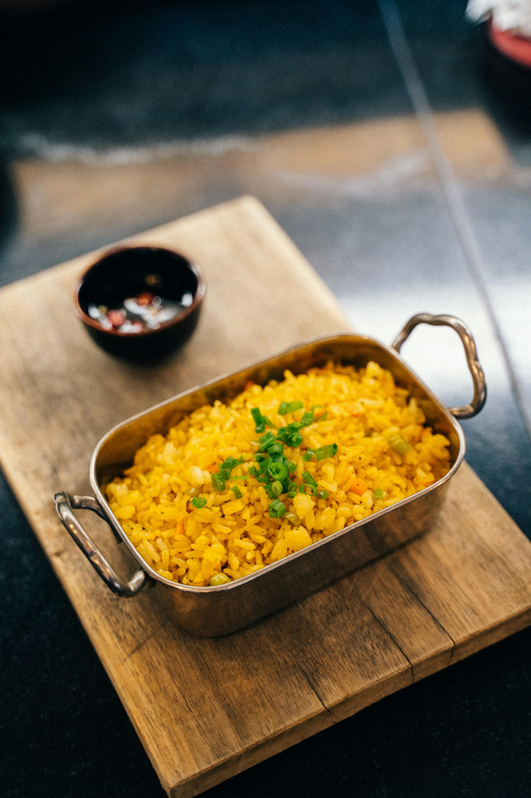

Fried Rice Recipe

Description
A classic dish that is perfect for those looking for a quick (and savory) bite.
It is quick to prepare, uses simple ingredients, yet also versatile with various toppings
to your liking! Follow this recipe to impress Uncle Roger with your cooking!
Ingredients
- Cooked rice.
- Carrots.
- Green peas.
- Garlic.
- Vegetable oil (or butter!).
- Soy sauce.
- Egg.
- Shrimps.
Steps
- Chop your carrots and cook for 3 to 5 minutes, mix together with green peas in a bowl, stir well.
- Heat your wok. Pour in vegetable oil. stir in carrots, peas, and garlic; cook for about 30 seconds.
- Add eggs, then stir quickly to scramble eggs with vegetables.
- Stir in cooked rice, add soy sauce, toss the rice to coat.
- Add shrimps, toss the rice to coat. Cook for 3 minutes.
- Serve hot and enjoy!